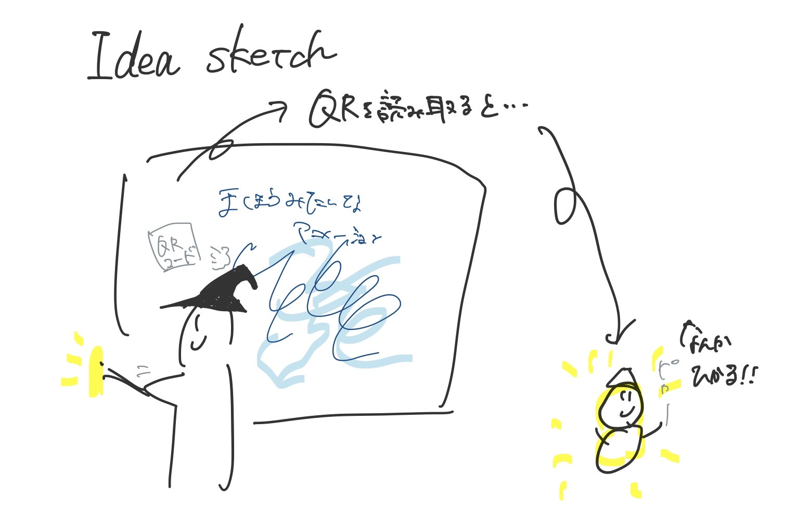
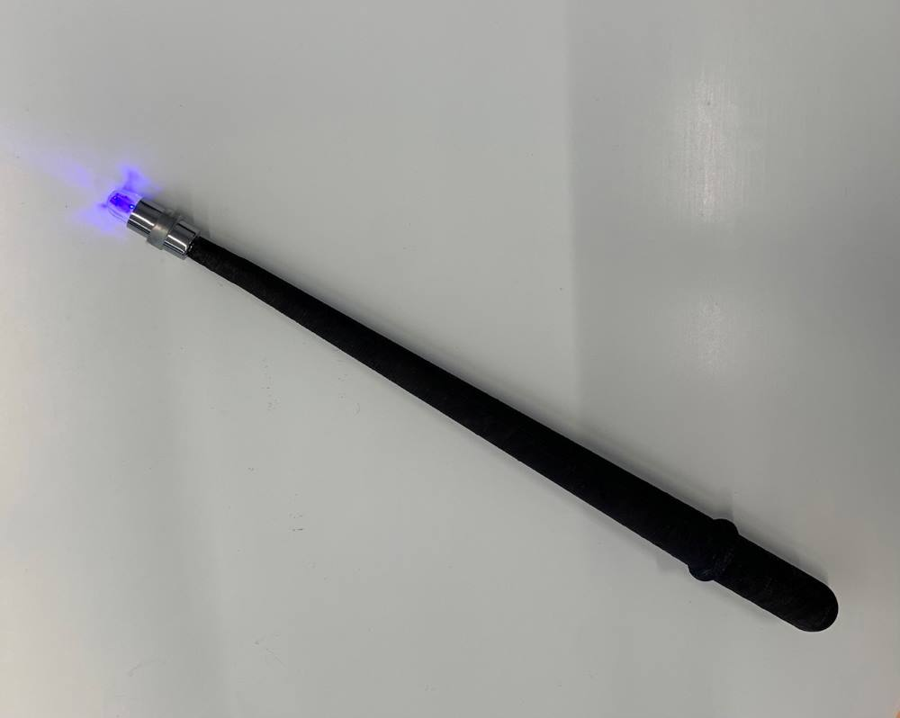
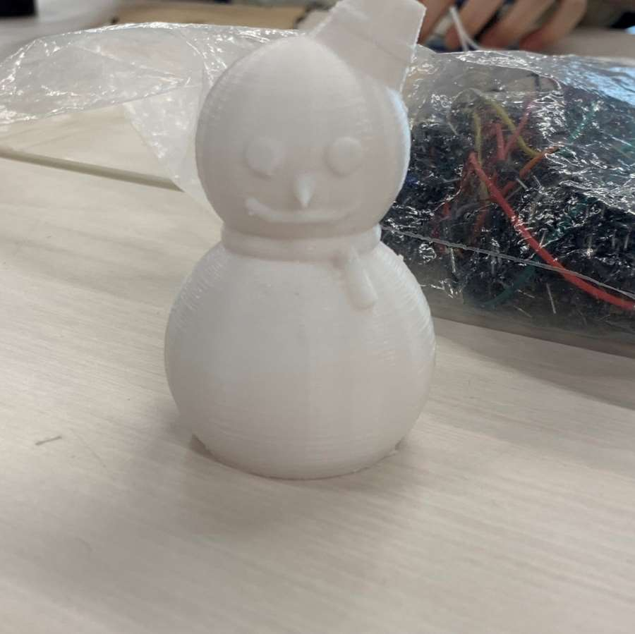
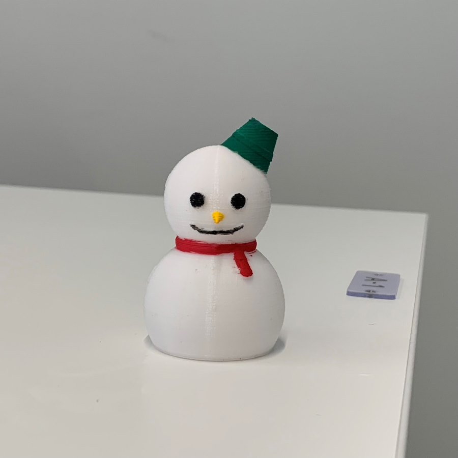
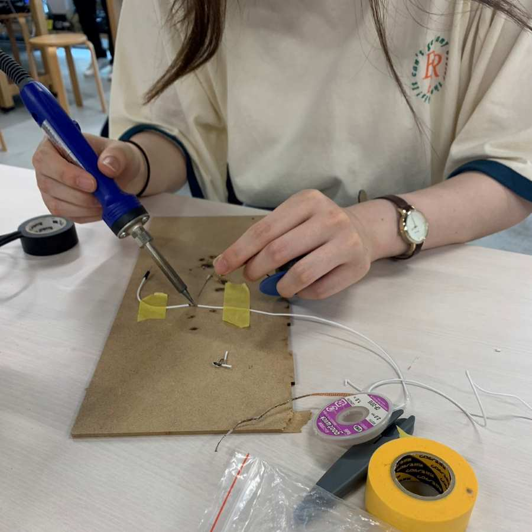

プロジェクトノート
アイディアスケッチ

概要
魔法を使えるようになりたいので、光を当てると魔法みたいなエフェクト的なアニメーションが流れる仕組みの何か。
アニメーション内に出てきたQRコードを読み取るととあるオブジェが光ります。すごい！
プロセスメモ
■光センサーの値によって魔法みたいな映像を流す
→
Processing
を使う
■Processingコーディング
■光センサーでProcessingを動かす
→(参照)
ArduinoとProcessingを繋げる
■センサーの値によってアニメーションが再生されるようにするには?
■魔法みたいなアニメーションをProcessingで作る
●いい感じのコピペ元探す(氷魔法をイメージ)
→(参照)
Processingでキラキラ図形を描く
→色を寒色系に変更し氷魔法感を出す
■アニメーション内にQRコードを流す
●Processingで画像を出す方法
→(参照)
画像が動き回る仕組み
→実際にQRコードを動かせた!
■1から2,3を繋げる
→先生のおかげもあり繋がった！
■アニメーションが流れると同時に効果音を流す
●Processingで音を流す方法を調べる
→(参照)
Processingで音を出す方法
→アニメーションのコードに追加する
●アニメーションと同時には流れるが、音が連発されてしまう…
→先生が新しくif関数を足してくれて解決！ありがとうございます
→使用した効果音
→
Springin
というサイトのフリー音源「魔法詠唱3」
完成したArduinoとProcessingのソースコードはこちら↓
ソースコード
■デジファブ使って杖型のライト作り
→3Dプリンターで杖の形作り
●LED買う
→買った
●アクリル絵の具で茶色に塗ってそれっぽくする
→完成！

■映像内に出現したQRコードを読みとると雪だるまオブジェが光るシステムを作る
■QRコードとLEDのプログラミング
●授業でも行った
dfLinkを使った遠隔システム
作る
→dfLinkのQRコードを上記のProcessingの画像に設定
■雪だるまづくり⛄
●3Dプリンターで作る、LEDを中に入れるといい感じに光るようにする
→1つ目(思ったように光らなかったので作り直す)

→完成品(アクリル絵の具で色付け)

■スクリーンに映すには配線が短いので長くする
→はんだをつかって長くした

使用したもの
Arduino
DfLink
Processing
cdsセル(光センサ)
発行ダイオード
アクリル絵の具
LED(楽天で購入)
紹介動画
前のページに戻る